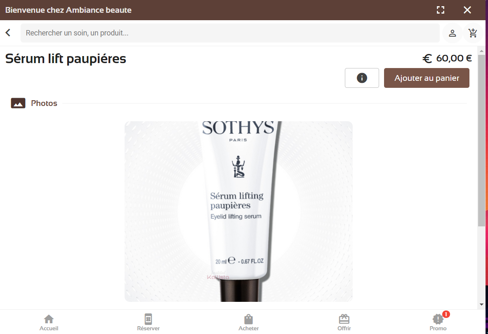

<html lang="fr">
  <!DOCTYPE html>
  <head>
    <meta charset="UTF-8" />
    <meta http-equiv="X-UA-Compatible" content="IE=edge" />
    <meta name="viewport" content="width=device-width, initial-scale=1" />
    <title>blog rendu de stage</title>
    <link href="/main.css" rel="stylesheet" />
    <link href="/assets/main_article_style.css" rel="stylesheet" />
  </head>
</html>

<header class="header">
  <h3 class="text1">blog de rendu de stage Louis Merlaud</h3>
  <a class="text2" href="../../index.html">A propos</a>
  <a class="text3" href="../articles.html">Articles</a>
  <a class="text4" href="../contact.html">Contact</a>
  <a class="text5" href="../presentation.html">l'entreprise</a>
</header>

<body>
  <h1 class="titre_g">CLIENT AMBIANCE BEAUTÉ</h1>
  <div class="article_content">
    <p>
      Durant la majorité de mon stage, j'ai dû m'occuper de la création d'un
      site pour un client dénommé "ambiance beauté", le design étant déjà faite
      en amont, mon rôle ici était de reproduire les designs des pages via les
      outils wordpress / elementor. Ce travail m'a permis de constater la charge
      de travail sur un site de commerce de petite / moyenne ampleur.
    </p>
    <p>
      Étant donné la simplicité des outils, j'ai pu constater que la mise en
      place des pages était assez rapide, de plus en prenant mieux la
      technologie en main j'ai pu améliorer mon efficacité au cours du temps
      (lors du premier jour de travail sur le site j'ai réalisé une page, et
      lors des jours suivants, j'ai pu monter à 3/4 ou 5 dans une journée). Je
      n'ai cependant pas réussi à faire certaines choses, comme un carrousel
      intégrant en plus des buttons.
    </p>
    <p>
      J'ai ainsi mis en forme les pages concernant les différents produits du
      client (massages, soins du visage, soins minceurs, etc…), pour effectuer
      l'achat des produits, la cliente nous a fourni un lien kalendes, qui un
      outil pour la gestion des salons de beauté; dans le cas présent ce
      kalendes permettait l'ouverture d'un widget permettant l'achat du produit.
      Pour l'intégrer au site, nous faisions un buton directement en html avec
      un attribut "onclick" qui contient ceci :
    </p>
    <p>
      "kalendes.selectArticle(1258397).then(function(){ <br />
      kalendes.show(); <br />
      })"
    </p>
    <p>
      avec la commande "selectArticle" on choisit l'article grâce à son id
      fournie par la cliente et enfin on fait apparaitre le widget avec "show".
    </p>
    <p>
      Afficher ces articles n'était pas forcément chose aisée car la cliente
      n'avait dans un premier temps pas mis tous les id de ces articles en
      ligne, sachant qu'en plus certains noms d'articles étaient différents
      entre le site et le kalendes de la cliente, il en était de même pour
      certain prix et temps de soins.
    </p>
  </div>
</body>


<p class="desc_img">exemple d'un widget kalendes avec produit</p>

<hr class="article_sep" />

<footer class="footer">
  <h3 class="titre_comp_f">Louis Merlaud - 2022</h3>
</footer>
